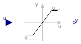

Modelica.Blocks.Nonlinear.SlewRateLimiter
Modelica.Blocks.Nonlinear.SlewRateLimiter
Modelica.Blocks.Nonlinear.SlewRateLimiter
Modelica.Blocks.Nonlinear.SlewRateLimiter
Limits the slew rate of a signal

The SlewRateLimiter block limits the slew rate of its input signal in the range of [Falling, Rising].
To ensure this for arbitrary inputs and in order to produce a differential output, the input is numerically differentiated
with derivative time constant Td. Smaller time constant Td means nearer ideal derivative.
Note: The user has to choose the derivative time constant according to the nature of the input signal.
Extends from Modelica.Blocks.Interfaces.SISO (Single Input Single Output continuous control block).
| Type | Name | Default | Description |
|---|---|---|---|
| DampingCoefficient | Rising | 1 | Maximum rising slew rate [+small..+inf) [s-1] |
| DampingCoefficient | Falling | -Rising | Maximum falling slew rate (-inf..-small] [s-1] |
| Time | Td | 0.001 | Derivative time constant [s] |
| Advanced | |||
| Boolean | strict | false | = true, if strict limits with noEvent(..) |
| Type | Name | Description |
|---|---|---|
| input RealInput | u | Connector of Real input signal |
| output RealOutput | y | Connector of Real output signal |
 Modelica.Blocks.Nonlinear.Limiter
Modelica.Blocks.Nonlinear.Limiter
Limit the range of a signal

The Limiter block passes its input signal as output signal as long as the input is within the specified upper and lower limits. If this is not the case, the corresponding limits are passed as output.
Extends from Interfaces.SISO (Single Input Single Output continuous control block).
| Type | Name | Default | Description |
|---|---|---|---|
| Real | uMax | Upper limits of input signals | |
| Real | uMin | -uMax | Lower limits of input signals |
| Advanced | |||
| Boolean | strict | false | = true, if strict limits with noEvent(..) |
| Dummy | |||
| Boolean | limitsAtInit | true | Has no longer an effect and is only kept for backwards compatibility (the implementation uses now the homotopy operator) |
| Type | Name | Description |
|---|---|---|
| input RealInput | u | Connector of Real input signal |
| output RealOutput | y | Connector of Real output signal |
 Modelica.Blocks.Nonlinear.FixedDelay
Modelica.Blocks.Nonlinear.FixedDelay
Delay block with fixed DelayTime

The Input signal is delayed by a given time instant, or more precisely:
y = u(time - delayTime) for time > time.start + delayTime
= u(time.start) for time ≤ time.start + delayTime
Extends from Modelica.Blocks.Interfaces.SISO (Single Input Single Output continuous control block).
| Type | Name | Default | Description |
|---|---|---|---|
| Time | delayTime | Delay time of output with respect to input signal [s] |
| Type | Name | Description |
|---|---|---|
| input RealInput | u | Connector of Real input signal |
| output RealOutput | y | Connector of Real output signal |